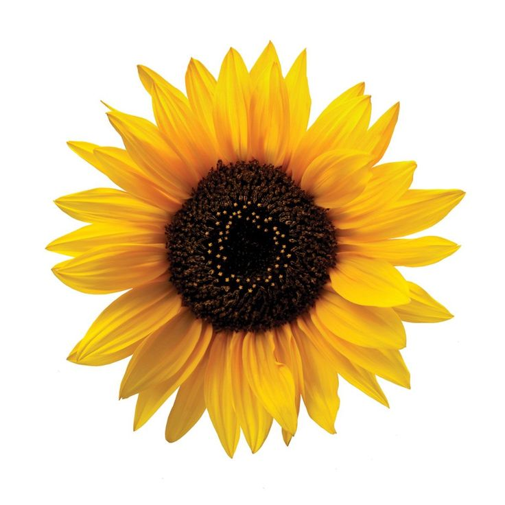
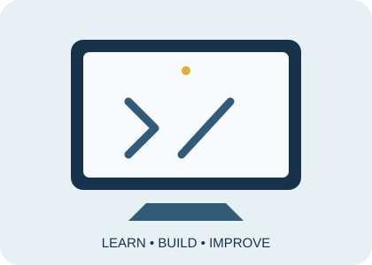

About Me
My education, background and personal goals.
Read about meWelcome to my website
I am a Bachelor of Information Technology with Business Management student. This website introduces my background, interests, skills and learning journey in technology.
I enjoy learning how digital solutions can make everyday tasks easier. Explore the pages to learn more about me and the projects I have worked on.
About Me View Portfolio

My education, background and personal goals.
Read about meSome hobbies, favourite topics and useful links.
Explore interestsA selection of learning activities and project work.
View projectsMy goal is to continue improving my technical and problem-solving skills and use them to develop useful, user-friendly web applications.